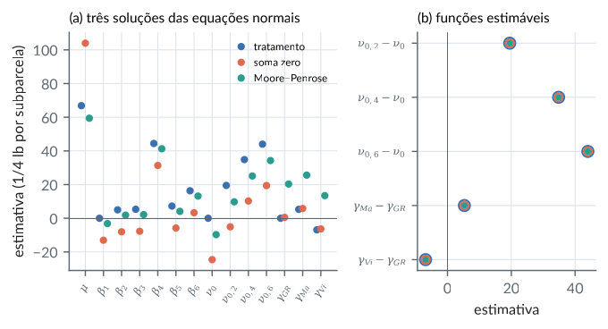
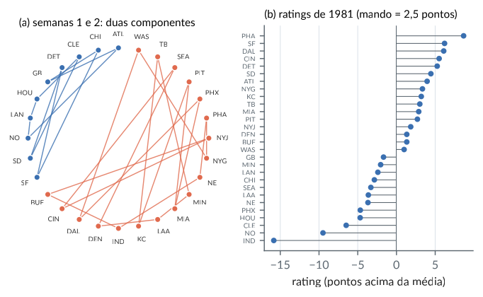
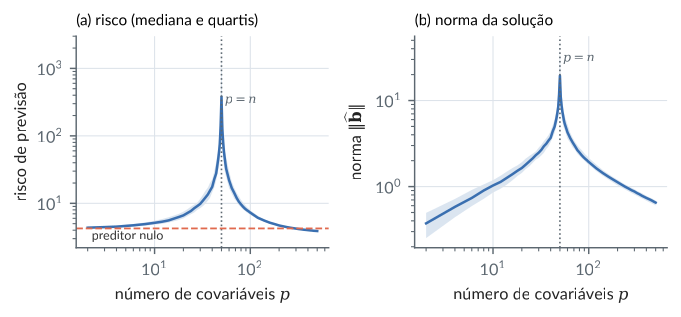
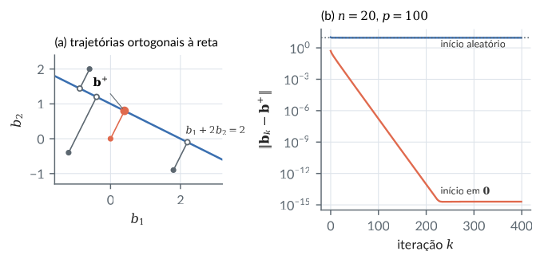
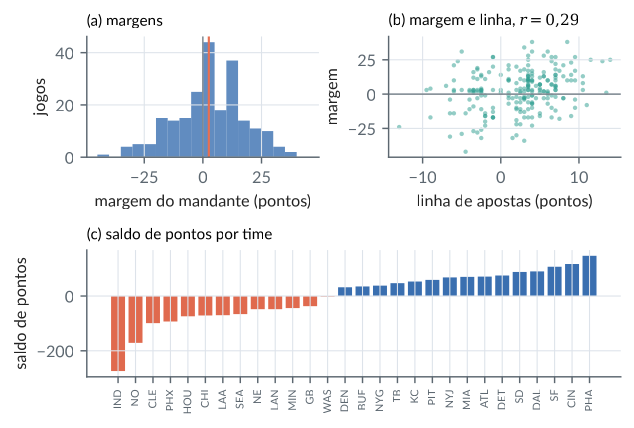

4. Inversas generalizadas e sistemas lineares
Material reprodutível do Capítulo 4 do livro.
Exemplos
Existência e não unicidade de inversas generalizadas
R/cap04/01_existencia.R
# Cap. 4: Existência e não unicidade de inversas generalizadas
A <- matrix(c(1, 2, 0, 1,
2, 4, 1, 1,
3, 6, 1, 2), 3, byrow = TRUE) # 3 x 4, posto 2
qr(A)$rank
# (1) Pela fatoração de posto A = B C (colunas 1 e 3 formam uma base de C(A))
B <- A[, c(1, 3)]
C <- rbind(c(1, 2, 0, 1), c(0, 0, 1, -1)) # coeficientes das colunas na base
max(abs(B %*% C - A))
G1 <- t(C) %*% solve(C %*% t(C)) %*% solve(crossprod(B)) %*% t(B)
# (2) Por uma submatriz 2 x 2 não singular (linhas 1-2, colunas 1 e 3)
G2 <- matrix(0, 4, 3)
G2[c(1, 3), 1:2] <- solve(A[1:2, c(1, 3)])
# (3) Uma terceira, pela forma geral G = G0 + U - G0 A U A G0
set.seed(4)
U <- matrix(round(rnorm(12), 1), 4, 3)
G3 <- G2 + U - G2 %*% A %*% U %*% A %*% G2
erro <- function(G) max(abs(A %*% G %*% A - A)) # verifica A G A = A
posto <- function(M) qr(M)$rank
Gs <- list(G1 = G1, G2 = G2, G3 = G3)
data.frame(erro_AGA = signif(sapply(Gs, erro), 2), posto_G = sapply(Gs, posto))
G2
round(G3, 2)Saída
[1] 2
[1] 0
erro_AGA posto_G
G1 8.9e-15 2
G2 0.0e+00 2
G3 1.4e-14 3
[,1] [,2] [,3]
[1,] 1 0 0
[2,] 0 0 0
[3,] -2 1 0
[4,] 0 0 0
[,1] [,2] [,3]
[1,] -4.1 -6.7 1.9
[2,] -0.5 0.7 1.8
[3,] -2.0 0.2 0.6
[4,] 0.6 -0.2 0.0python/cap04/01_existencia.py
"""Cap. 4: Existência e não unicidade de inversas generalizadas."""
import numpy as np
A = np.array([[1, 2, 0, 1], [2, 4, 1, 1], [3, 6, 1, 2]], dtype=float) # 3 x 4, posto 2
print("posto:", np.linalg.matrix_rank(A))
# (1) Fatoração de posto A = B C
B = A[:, [0, 2]]
C = np.array([[1, 2, 0, 1], [0, 0, 1, -1]], dtype=float)
G1 = C.T @ np.linalg.inv(C @ C.T) @ np.linalg.inv(B.T @ B) @ B.T
# (2) Submatriz 2 x 2 não singular (linhas 1-2, colunas 1 e 3)
G2 = np.zeros((4, 3))
G2[np.ix_([0, 2], [0, 1])] = np.linalg.inv(A[np.ix_([0, 1], [0, 2])])
# (3) Forma geral G = G0 + U - G0 A U A G0
rng = np.random.default_rng(4)
U = np.round(rng.normal(size=(4, 3)), 1)
G3 = G2 + U - G2 @ A @ U @ A @ G2
for nome, G in (("G1", G1), ("G2", G2), ("G3", G3)):
print(nome, "erro A G A - A =", f"{np.abs(A @ G @ A - A).max():.1e}",
" posto(G) =", np.linalg.matrix_rank(G))
print("G1 coincide com a de Moore-Penrose:", np.allclose(G1, np.linalg.pinv(A)))Saída
posto: 2
G1 erro A G A - A = 5.3e-15 posto(G) = 2
G2 erro A G A - A = 0.0e+00 posto(G) = 2
G3 erro A G A - A = 7.1e-15 posto(G) = 3
G1 coincide com a de Moore-Penrose: TrueEquações normais de um modelo superparametrizado: o que muda e o que não muda
R/cap04/02_invariancia.R
# Cap. 4: Equações normais de um modelo superparametrizado: o que muda e o que não muda
grupo <- factor(c(1, 1, 2, 2, 2, 3, 3))
y <- c(12, 14, 18, 17, 19, 10, 11)
X <- cbind(1, model.matrix(~ grupo - 1)) # mu, alfa1, alfa2, alfa3 (posto 3)
XtX <- crossprod(X); Xty <- crossprod(X, y)
Gmp <- MASS::ginv(XtX) # Moore-Penrose
Gsub <- matrix(0, 4, 4); Gsub[2:4, 2:4] <- solve(XtX[2:4, 2:4]) # zera a linha/coluna de mu
c(erro_mp = max(abs(XtX %*% Gmp %*% XtX - XtX)), erro_sub = max(abs(XtX %*% Gsub %*% XtX - XtX)))
b_mp <- Gmp %*% Xty; b_sub <- Gsub %*% Xty # duas soluções das equações normais
round(cbind(mp = drop(b_mp), sub = drop(b_sub)), 4)
H_mp <- X %*% Gmp %*% t(X); H_sub <- X %*% Gsub %*% t(X)
c(dif_H = max(abs(H_mp - H_sub)), simetria = max(abs(H_mp - t(H_mp))),
idempotencia = max(abs(H_mp %*% H_mp - H_mp)), traco = sum(diag(H_mp)))
# lambda' b: invariante se lambda' está no espaço linha de X
L <- rbind(mu = c(1, 0, 0, 0), alfa1 = c(0, 1, 0, 0),
mu_alfa1 = c(1, 1, 0, 0), alfa1_alfa2 = c(0, 1, -1, 0))
cbind(mp = drop(L %*% b_mp), sub = drop(L %*% b_sub))Saída
erro_mp erro_sub
1.776357e-15 0.000000e+00
mp sub
[1,] 10.375 0.0
[2,] 2.625 13.0
[3,] 7.625 18.0
[4,] 0.125 10.5
dif_H simetria idempotencia traco
2.220446e-16 9.714451e-17 2.220446e-16 3.000000e+00
mp sub
mu 10.375 0
alfa1 2.625 13
mu_alfa1 13.000 13
alfa1_alfa2 -5.000 -5python/cap04/02_invariancia.py
"""Cap. 4: Equações normais de um modelo superparametrizado: o que muda e o que não muda."""
import numpy as np
g = np.array([1, 1, 2, 2, 2, 3, 3])
y = np.array([12, 14, 18, 17, 19, 10, 11], dtype=float)
X = np.column_stack([np.ones(7), (g[:, None] == np.arange(1, 4)).astype(float)])
XtX, Xty = X.T @ X, X.T @ y
Gmp = np.linalg.pinv(XtX)
Gsub = np.zeros((4, 4)); Gsub[1:, 1:] = np.linalg.inv(XtX[1:, 1:])
b_mp, b_sub = Gmp @ Xty, Gsub @ Xty
print("soluções:\n", np.round(np.column_stack([b_mp, b_sub]), 4))
H_mp, H_sub = X @ Gmp @ X.T, X @ Gsub @ X.T
print(f"dif. entre as matrizes H: {np.abs(H_mp - H_sub).max():.1e}; traço = {np.trace(H_mp):.4f}")
L = np.array([[1, 0, 0, 0], [0, 1, 0, 0], [1, 1, 0, 0], [0, 1, -1, 0]], dtype=float)
for nome, l in zip(["mu", "alfa1", "mu+alfa1", "alfa1-alfa2"], L):
print(f"{nome:12s} {l @ b_mp:9.4f} {l @ b_sub:9.4f}")Saída
soluções:
[[10.375 0. ]
[ 2.625 13. ]
[ 7.625 18. ]
[ 0.125 10.5 ]]
dif. entre as matrizes H: 2.8e-16; traço = 3.0000
mu 10.3750 0.0000
alfa1 2.6250 13.0000
mu+alfa1 13.0000 13.0000
alfa1-alfa2 -5.0000 -5.0000Compatibilidade e solução geral de A x = b (e de A X C = B)
R/cap04/03_sistemas.R
# Cap. 4: Compatibilidade e solução geral de A x = b (e de A X C = B)
A <- matrix(c(1, 2, 0, 1, 2, 4, 1, 1, 3, 6, 1, 2), 3, byrow = TRUE) # posto 2
G <- MASS::ginv(A)
compativel <- function(b) isTRUE(all.equal(drop(A %*% G %*% b), b)) # teste A G b = b
b1 <- c(4, 8, 12); b2 <- c(1, 0, 0)
c(b1 = compativel(b1), b2 = compativel(b2))
# solução geral x = G b + (I - G A) z
set.seed(1)
x <- function(z) drop(G %*% b1 + (diag(4) - G %*% A) %*% z)
X <- sapply(1:5, function(i) x(rnorm(4))) # cinco soluções
round(X, 3)
max(abs(A %*% X - b1)) # todas resolvem o sistema
qr(diag(4) - G %*% A)$rank # dim N(A) = 4 - posto(A) = 2
# k'x é o mesmo para todas as soluções se, e somente se, k' está no espaço linha de A
k_linha <- c(3, 6, 1, 2) - c(1, 2, 0, 1) # combinação de linhas de A
k_fora <- c(1, 0, 0, 0)
round(rbind(k_linha = drop(k_linha %*% X), k_fora = drop(k_fora %*% X)), 3)
# A X C = B: compatível se A A^- B C^- C = B; solução geral A^- B C^- + Z - A^- A Z C C^-
C <- matrix(c(1, 2, 2, 4), 2) # posto 1
B <- A %*% matrix(1:8, 4) %*% C
Gc <- MASS::ginv(C)
max(abs(A %*% G %*% B %*% Gc %*% C - B))
Z <- matrix(rnorm(8), 4)
Xs <- G %*% B %*% Gc + Z - G %*% A %*% Z %*% C %*% Gc
max(abs(A %*% Xs %*% C - B))Saída
b1 b2
TRUE FALSE
[,1] [,2] [,3] [,4] [,5]
[1,] 0.079 1.184 1.137 0.926 0.242
[2,] 1.594 0.888 0.816 0.880 1.461
[3,] 0.732 1.040 1.231 1.314 0.837
[4,] 0.732 1.040 1.231 1.314 0.837
[1] 1.421085e-14
[1] 2
[,1] [,2] [,3] [,4] [,5]
k_linha 8.000 8.000 8.000 8.000 8.000
k_fora 0.079 1.184 1.137 0.926 0.242
[1] 2.273737e-13
[1] 2.842171e-13python/cap04/03_sistemas.py
"""Cap. 4: Compatibilidade e solução geral de A x = b (e de A X C = B)."""
import numpy as np
A = np.array([[1, 2, 0, 1], [2, 4, 1, 1], [3, 6, 1, 2]], dtype=float)
G = np.linalg.pinv(A)
compativel = lambda b: np.allclose(A @ G @ b, b)
b1, b2 = np.array([4.0, 8, 12]), np.array([1.0, 0, 0])
print("compatível:", compativel(b1), compativel(b2))
rng = np.random.default_rng(1)
Xsol = np.column_stack([G @ b1 + (np.eye(4) - G @ A) @ rng.normal(size=4) for _ in range(5)])
print(np.round(Xsol, 3))
print("erro máximo:", np.abs(A @ Xsol - b1[:, None]).max(), " dim N(A):",
np.linalg.matrix_rank(np.eye(4) - G @ A, tol=1e-10))
print("k no espaço linha:", np.round(np.array([2, 4, 1, 1]) @ Xsol, 6))
print("k fora :", np.round(np.array([1, 0, 0, 0]) @ Xsol, 3))
C = np.array([[1, 2], [2, 4]], dtype=float)
B = A @ np.arange(1, 9, dtype=float).reshape(2, 4).T @ C
Gc = np.linalg.pinv(C)
Z = rng.normal(size=(4, 2))
Xs = G @ B @ Gc + Z - G @ A @ Z @ C @ Gc
print("A X C = B:", np.abs(A @ G @ B @ Gc @ C - B).max(), np.abs(A @ Xs @ C - B).max())Saída
compatível: True False
[[ 0.8 1.302 0.866 0.173 0.961]
[ 1.73 1.239 1.298 1.657 1.549]
[-0.259 0.22 0.538 0.513 -0.059]
[-0.259 0.22 0.538 0.513 -0.059]]
erro máximo: 7.105427357601002e-15 dim N(A): 2
k no espaço linha: [8. 8. 8. 8. 8.]
k fora : [0.8 1.302 0.866 0.173 0.961]
A X C = B: 2.2737367544323206e-13 1.7053025658242404e-13Inversas reflexivas, de mínimos quadrados, de norma mínima e de Moore-Penrose
R/cap04/04_tipos.R
# Cap. 4: Inversas reflexivas, de mínimos quadrados, de norma mínima e de Moore-Penrose
A <- matrix(c(1, 2, 0, 1, 2, 4, 1, 1, 3, 6, 1, 2), 3, byrow = TRUE) # posto 2
ginv_sub <- function(M, i, j) { # inversa generalizada por submatriz
G <- matrix(0, ncol(M), nrow(M)); G[j, i] <- solve(M[i, j]); G
}
G_sub <- ginv_sub(A, 1:2, c(1, 3))
G_mq <- ginv_sub(crossprod(A), c(1, 3), c(1, 3)) %*% t(A) # (A'A)^- A'
G_nm <- t(A) %*% ginv_sub(tcrossprod(A), 1:2, 1:2) # A'(AA')^-
G_mp <- MASS::ginv(A)
penrose <- function(G, tol = 1e-10) c(
"AGA=A" = max(abs(A %*% G %*% A - A)) < tol,
"GAG=G" = max(abs(G %*% A %*% G - G)) < tol,
"(AG)'=AG" = max(abs(A %*% G - t(A %*% G))) < tol,
"(GA)'=GA" = max(abs(G %*% A - t(G %*% A))) < tol)
sapply(list(sub = G_sub, mq = G_mq, nm = G_nm, mp = G_mp), penrose)
# Sistema incompatível: G_mq b e G_mp b minimizam ||A x - b||; G_mp b tem a menor norma
b <- c(1, 0, 0)
sol <- list(sub = G_sub %*% b, mq = G_mq %*% b, mp = G_mp %*% b)
sapply(sol, function(x) c(residuo = sqrt(sum((A %*% x - b)^2)), norma = sqrt(sum(x^2))))
# Sistema compatível: G_nm b é a solução de norma mínima (coincide com G_mp b)
b1 <- c(4, 8, 12)
c(dif_nm_mp = max(abs(G_nm %*% b1 - G_mp %*% b1)), norma_mp = sqrt(sum((G_mp %*% b1)^2)),
norma_sub = sqrt(sum((G_sub %*% b1)^2)))
# Moore-Penrose pela fatoração de posto e como limite da solução ridge
B <- A[, c(1, 3)]; C <- rbind(c(1, 2, 0, 1), c(0, 0, 1, -1))
max(abs(t(C) %*% solve(tcrossprod(C)) %*% solve(crossprod(B)) %*% t(B) - G_mp))
sapply(10^-(1:6), function(l) max(abs(solve(crossprod(A) + l * diag(4), t(A)) - G_mp)))Saída
sub mq nm mp
AGA=A TRUE TRUE TRUE TRUE
GAG=G TRUE TRUE TRUE TRUE
(AG)'=AG FALSE TRUE FALSE TRUE
(GA)'=GA FALSE FALSE TRUE TRUE
sub mq mp
residuo 1.000000 0.5773503 0.5773503
norma 2.236068 1.7950549 1.1806521
dif_nm_mp norma_mp norma_sub
3.996803e-15 1.705606e+00 4.000000e+00
[1] 1.887379e-15
[1] 1.623785e-01 1.959447e-02 2.000806e-03 2.005038e-04 2.005461e-05
[6] 2.005375e-06python/cap04/04_tipos.py
"""Cap. 4: Inversas reflexivas, de mínimos quadrados, de norma mínima e de Moore-Penrose."""
import numpy as np
A = np.array([[1, 2, 0, 1], [2, 4, 1, 1], [3, 6, 1, 2]], dtype=float)
def ginv_sub(M, i, j):
G = np.zeros(M.T.shape); G[np.ix_(j, i)] = np.linalg.inv(M[np.ix_(i, j)]); return G
G = {"sub": ginv_sub(A, [0, 1], [0, 2]),
"mq": ginv_sub(A.T @ A, [0, 2], [0, 2]) @ A.T,
"nm": A.T @ ginv_sub(A @ A.T, [0, 1], [0, 1]),
"mp": np.linalg.pinv(A)}
ok = lambda M: "sim" if np.abs(M).max() < 1e-10 else "não"
print(" AGA=A GAG=G (AG)'=AG (GA)'=GA")
for k, g in G.items():
print(f"{k:5s}", *(f"{ok(M):>6s}" for M in (A @ g @ A - A, g @ A @ g - g, A @ g - (A @ g).T, g @ A - (g @ A).T)))
b = np.array([1.0, 0, 0])
for k in ("sub", "mq", "mp"):
x = G[k] @ b
print(f"{k:4s} resíduo = {np.linalg.norm(A @ x - b):.4f} norma = {np.linalg.norm(x):.4f}")
x_ls = np.linalg.lstsq(A, b, rcond=None)[0] # lstsq devolve a solução de norma mínima
print("lstsq = pinv b:", np.allclose(x_ls, G["mp"] @ b))
for lam in 10.0 ** -np.arange(1, 7):
print(f"lambda = {lam:.0e}: dif. = {np.abs(np.linalg.solve(A.T @ A + lam * np.eye(4), A.T) - G['mp']).max():.1e}")Saída
AGA=A GAG=G (AG)'=AG (GA)'=GA
sub sim sim não não
mq sim sim sim não
nm sim sim não sim
mp sim sim sim sim
sub resíduo = 1.0000 norma = 2.2361
mq resíduo = 0.5774 norma = 1.7951
mp resíduo = 0.5774 norma = 1.1807
lstsq = pinv b: True
lambda = 1e-01: dif. = 1.6e-01
lambda = 1e-02: dif. = 2.0e-02
lambda = 1e-03: dif. = 2.0e-03
lambda = 1e-04: dif. = 2.0e-04
lambda = 1e-05: dif. = 2.0e-05
lambda = 1e-06: dif. = 2.0e-06Restrições de identificação no experimento de aveia e inversas generalizadas
R/cap04/05_aveia_restricoes.R
# Cap. 4: Restrições de identificação no experimento de aveia e inversas generalizadas
aveia <- read.csv(file.path("dados", "yates_oats.csv"))
ind <- function(f) model.matrix(~ factor(f) - 1)
X <- cbind(1, ind(aveia$block), ind(aveia$nitro), ind(aveia$gen)) # 72 x 14, posto 11
colnames(X) <- c("mu", paste0("b", 1:6), paste0("n", c(0, 2, 4, 6)), c("GR", "Ma", "Vi"))
y <- aveia$yield
XtX <- crossprod(X); Xty <- crossprod(X, y)
e <- function(j) as.numeric(colnames(X) %in% j) # vetor com uns nas posições j
# Três conjuntos de restrições K b = 0, cada um com 14 - 11 = 3 linhas
K <- list(
tratamento = rbind(e("b1"), e("n0"), e("GR")), # primeiro nível de cada fator = 0
soma_zero = rbind(e(paste0("b", 1:6)), e(paste0("n", c(0, 2, 4, 6))), e(c("GR", "Ma", "Vi"))),
internas = rbind(e("mu") - e(paste0("b", 1:6)), e("mu") - e(paste0("n", c(0, 2, 4, 6))),
e("mu") - e(c("GR", "Ma", "Vi")))) # linhas de uma base de N(X)
sol <- sapply(K, function(Kk) {
stopifnot(qr(rbind(X, Kk))$rank == 14) # [X; K] tem posto coluna completo
G <- solve(XtX + crossprod(Kk)) # é inversa generalizada de X'X
stopifnot(max(abs(XtX %*% G %*% XtX - XtX)) < 1e-8)
b <- G %*% Xty
stopifnot(max(abs(Kk %*% b)) < 1e-8) # satisfaz as restrições
drop(b)
})
sol <- cbind(sol, ginv = drop(MASS::ginv(XtX) %*% Xty)) # Moore-Penrose
round(sol[c("mu", "b1", "n0", "n6", "GR", "Vi"), ], 2)
# Funções lambda' b: estimável se lambda' G X'X = lambda' (lambda no espaço linha de X)
G <- MASS::ginv(XtX)
estimavel <- function(l) max(abs(l %*% G %*% XtX - l)) < 1e-8
L <- rbind("n6 - n0" = e("n6") - e("n0"),
"Vi - GR" = e("Vi") - e("GR"),
"mu + b1 + n0 + GR" = e(c("mu", "b1", "n0", "GR")),
"mu" = e("mu"),
"n6" = e("n6"))
data.frame(round(L %*% sol, 3), estimavel = apply(L, 1, estimavel), check.names = FALSE)
max(abs(X %*% (sol - sol[, 1]))) # valores ajustados idênticosSaída
tratamento soma_zero internas ginv
mu 66.86 103.97 59.41 59.41
b1 0.00 -13.06 -3.15 -3.15
n0 0.00 -24.58 -9.73 -9.73
n6 44.00 19.42 34.27 34.27
GR 0.00 0.53 20.33 20.33
Vi -6.87 -6.35 13.46 13.46
tratamento soma_zero internas ginv estimavel
n6 - n0 44.000 44.000 44.000 44.000 TRUE
Vi - GR -6.875 -6.875 -6.875 -6.875 TRUE
mu + b1 + n0 + GR 66.861 66.861 66.861 66.861 TRUE
mu 66.861 103.972 59.413 59.413 FALSE
n6 44.000 19.417 34.270 34.270 FALSE
[1] 1.379519e-11python/cap04/05_aveia_restricoes.py
"""Cap. 4: Restrições de identificação no experimento de aveia e inversas generalizadas."""
from pathlib import Path
import numpy as np
import pandas as pd
aveia = pd.read_csv(Path(__file__).resolve().parents[2] / "dados" / "yates_oats.csv")
ind = lambda s: pd.get_dummies(s).to_numpy(float)
X = np.column_stack([np.ones(len(aveia)), ind(aveia["block"]), ind(aveia["nitro"]), ind(aveia["gen"])])
nomes = ["mu"] + [f"b{i}" for i in range(1, 7)] + ["n0", "n2", "n4", "n6", "GR", "Ma", "Vi"]
y = aveia["yield"].to_numpy(float)
XtX, Xty = X.T @ X, X.T @ y
e = lambda *js: np.array([float(n in js) for n in nomes])
B, N, V = nomes[1:7], nomes[7:11], nomes[11:]
K = {"tratamento": np.array([e("b1"), e("n0"), e("GR")]),
"soma_zero": np.array([e(*B), e(*N), e(*V)]),
"internas": np.array([e("mu") - e(*B), e("mu") - e(*N), e("mu") - e(*V)])}
sol = {}
for nome, Kk in K.items():
assert np.linalg.matrix_rank(np.vstack([X, Kk])) == 14
G = np.linalg.inv(XtX + Kk.T @ Kk)
assert np.abs(XtX @ G @ XtX - XtX).max() < 1e-8
sol[nome] = G @ Xty
sol["pinv"] = np.linalg.pinv(XtX) @ Xty
tab = pd.DataFrame(sol, index=nomes)
print(tab.loc[["mu", "b1", "n0", "n6", "GR", "Vi"]].round(2) + 0.0)
L = {"n6 - n0": e("n6") - e("n0"), "Vi - GR": e("Vi") - e("GR"),
"mu + b1 + n0 + GR": e("mu", "b1", "n0", "GR"), "mu": e("mu"), "n6": e("n6")}
Gmp = np.linalg.pinv(XtX)
for nome, l in L.items():
est = np.abs(l @ Gmp @ XtX - l).max() < 1e-8
print(f"{nome:18s}", np.round(l @ tab.to_numpy(), 3), "estimável" if est else "não estimável")Saída
tratamento soma_zero internas pinv
mu 66.86 103.97 59.41 59.41
b1 0.00 -13.06 -3.15 -3.15
n0 0.00 -24.58 -9.73 -9.73
n6 44.00 19.42 34.27 34.27
GR 0.00 0.53 20.33 20.33
Vi -6.87 -6.35 13.46 13.46
n6 - n0 [44. 44. 44. 44.] estimável
Vi - GR [-6.875 -6.875 -6.875 -6.875] estimável
mu + b1 + n0 + GR [66.861 66.861 66.861 66.861] estimável
mu [ 66.861 103.972 59.413 59.413] não estimável
n6 [44. 19.417 34.27 34.27 ] não estimávelFigura: aveia restricoes
python/cap04/fig_cap04.py
def fig_aveia():
a = pd.read_csv(DADOS / "yates_oats.csv")
ind = lambda s: pd.get_dummies(s).to_numpy(float)
X = np.column_stack([np.ones(len(a)), ind(a["block"]), ind(a["nitro"]), ind(a["gen"])])
nomes = [r"$\mu$"] + [f"$\\beta_{i}$" for i in range(1, 7)] + \
[f"$\\nu_{{{d}}}$" for d in ("0", "0,2", "0,4", "0,6")] + [r"$\gamma_{GR}$", r"$\gamma_{Ma}$", r"$\gamma_{Vi}$"]
y = a["yield"].to_numpy(float)
XtX, Xty = X.T @ X, X.T @ y
e = lambda js: np.isin(np.arange(14), js).astype(float)
K = {"tratamento": [e([1]), e([7]), e([11])],
"soma zero": [e(range(1, 7)), e(range(7, 11)), e(range(11, 14))],
"Moore–Penrose": [e([0]) - e(range(1, 7)), e([0]) - e(range(7, 11)), e([0]) - e(range(11, 14))]}
sol = {k: np.linalg.solve(XtX + np.array(v).T @ np.array(v), Xty) for k, v in K.items()}
fig, (a1, a2) = plt.subplots(1, 2, figsize=(LARG, 2.9), gridspec_kw={"width_ratios": [1.5, 1]})
pos = np.arange(14)
for i, (k, b) in enumerate(sol.items()):
a1.plot(pos + (i - 1) * 0.22, b, "o", ms=3.6, color=CATEG[i], label=k)
a1.set_xticks(pos, nomes, fontsize=6.5, rotation=60)
a1.axhline(0, color=COR["cinza"], lw=0.5)
a1.set_ylabel("estimativa (1/4 lb por subparcela)")
a1.set_title("(a) três soluções das equações normais", fontsize=8.5, loc="left")
a1.legend(fontsize=6.5, loc="upper right", handletextpad=0.2)
# funções estimáveis: diferenças de doses e de variedades
L = {r"$\nu_{0,2}-\nu_0$": e([8]) - e([7]), r"$\nu_{0,4}-\nu_0$": e([9]) - e([7]),
r"$\nu_{0,6}-\nu_0$": e([10]) - e([7]), r"$\gamma_{Ma}-\gamma_{GR}$": e([12]) - e([11]),
r"$\gamma_{Vi}-\gamma_{GR}$": e([13]) - e([11])}
for i, (k, b) in enumerate(sol.items()):
v = [l @ b for l in L.values()]
a2.plot(v, np.arange(len(L)) + (i - 1) * 0.0, "o", ms=[7, 5, 3][i], color=CATEG[i],
markerfacecolor="none" if i < 2 else CATEG[i], mew=1.1)
a2.set_yticks(np.arange(len(L)), list(L.keys()), fontsize=7)
a2.axvline(0, color=COR["cinza"], lw=0.5)
a2.set_xlabel("estimativa")
a2.set_title("(b) funções estimáveis", fontsize=8.5, loc="left")
a2.invert_yaxis()
fig.tight_layout()
salvar(fig, CAP, "aveia_restricoes")Trecho de python/cap04/fig_cap04.py, que traz também as importações e o estilo.

Cadeia de Markov do mercado de trabalho: sistemas singulares compatíveis
R/cap04/06_markov_trabalho.R
# Cap. 4: Cadeia de Markov do mercado de trabalho: sistemas singulares compatíveis
estados <- c("E", "D", "F") # empregado, desempregado, fora da força de trabalho
P <- matrix(c(0.960, 0.015, 0.025,
0.250, 0.600, 0.150,
0.040, 0.030, 0.930), 3, byrow = TRUE, dimnames = list(estados, estados))
r <- c(E = 3000, D = 600, F = 300) # renda mensal em cada estado (R$)
A <- diag(3) - P
c(posto = qr(A)$rank, soma_linhas = max(abs(A %*% rep(1, 3)))) # A 1 = 0
# Distribuição estacionária: pi'(I - P) = 0 com 1'pi = 1 (sistema 4 x 3 compatível)
M <- rbind(t(A), 1); d <- c(0, 0, 0, 1)
Gm <- MASS::ginv(M)
data.frame(compativel = max(abs(M %*% Gm %*% d - d)) < 1e-12, posto_M = qr(M)$rank)
pi_est <- drop(Gm %*% d); names(pi_est) <- estados
round(pi_est, 4)
c(taxa_desemprego = unname(pi_est["D"] / (pi_est["E"] + pi_est["D"])),
participacao = unname(pi_est["E"] + pi_est["D"]))
# Equação de Poisson (I - P) h = r - g 1: compatível se, e só se, g = pi' r
G <- MASS::ginv(A)
compat <- function(g) max(abs(A %*% G %*% (r - g) - (r - g))) < 1e-9
g <- sum(pi_est * r)
data.frame(g = g, compativel_g = compat(g), compativel_2500 = compat(2500))
# Solução geral h = G (r - g 1) + (I - G A) z: muda só por constantes
set.seed(3)
H <- sapply(1:3, function(i) drop(G %*% (r - g) + (diag(3) - G %*% A) %*% rnorm(3, sd = 1e4)))
rownames(H) <- estados; round(H, 1)
round(rbind(E_menos_D = H["E", ] - H["D", ], D_menos_F = H["D", ] - H["F", ]), 2)
# Conferência: h_E - h_D = soma_t (e_E - e_D)' P^t (r - g 1), a vantagem acumulada de renda
v <- c(1, -1, 0); s <- 0
for (t in 0:2000) { s <- s + sum(v * r); v <- drop(v %*% P) }
sSaída
posto soma_linhas
2.000000e+00 5.551115e-17
compativel posto_M
1 TRUE 3
E D F
0.6258 0.0479 0.3262
taxa_desemprego participacao
0.07114625 0.67376831
g compativel_g compativel_2500
1 2004.128 TRUE FALSE
[,1] [,2] [,3]
E 11967.4 12198.9 15230.2
D -3092.5 -2861.1 170.3
F -18831.6 -18600.1 -15568.7
[,1] [,2] [,3]
E_menos_D 15059.92 15059.92 15059.92
D_menos_F 15739.01 15739.01 15739.01
[1] 15059.92python/cap04/06_markov_trabalho.py
"""Cap. 4: Cadeia de Markov do mercado de trabalho: sistemas singulares compatíveis."""
import numpy as np
P = np.array([[0.960, 0.015, 0.025], [0.250, 0.600, 0.150], [0.040, 0.030, 0.930]])
r = np.array([3000.0, 600.0, 300.0]) # E, D, F
A = np.eye(3) - P
print("posto(I - P):", np.linalg.matrix_rank(A))
M, d = np.vstack([A.T, np.ones(3)]), np.array([0.0, 0, 0, 1])
Gm = np.linalg.pinv(M)
print("compatível:", np.allclose(M @ Gm @ d, d))
pi = Gm @ d
print("pi =", np.round(pi, 4), " desemprego =", round(pi[1] / (pi[0] + pi[1]), 4))
G = np.linalg.pinv(A)
g = pi @ r
compat = lambda g: np.allclose(A @ G @ (r - g), r - g)
print(f"g = {g:.2f}; compatível com g: {compat(g)}; com 2500: {compat(2500)}")
rng = np.random.default_rng(3)
H = np.column_stack([G @ (r - g) + (np.eye(3) - G @ A) @ rng.normal(0, 1e4, 3) for _ in range(3)])
print("h_E - h_D:", np.round(H[0] - H[1], 2), " h_D - h_F:", np.round(H[1] - H[2], 2))Saída
posto(I - P): 2
compatível: True
pi = [0.6258 0.0479 0.3262] desemprego = 0.0711
g = 2004.13; compatível com g: True; com 2500: False
h_E - h_D: [15059.92 15059.92 15059.92] h_D - h_F: [15739.01 15739.01 15739.01]Ratings de Massey na NFL: o que é estimável num campeonato
R/cap04/07_massey_nfl.R
# Cap. 4: Ratings de Massey na NFL: o que é estimável num campeonato
nfl <- read.csv(file.path("dados", "nfl.csv"))
s <- subset(nfl, ano == 1981)
times <- sort(unique(c(s$mandante, s$visitante))) # 28 times
delineamento <- function(j) { # +1 mandante, -1 visitante, 1 (mando)
X <- matrix(0, nrow(j), length(times), dimnames = list(NULL, times))
X[cbind(seq_len(nrow(j)), match(j$mandante, times))] <- 1
X[cbind(seq_len(nrow(j)), match(j$visitante, times))] <- -1
cbind(X, mando = 1)
}
X <- delineamento(s); y <- s$pontos_mandante - s$pontos_visitante
c(jogos = nrow(X), colunas = ncol(X), posto = qr(X)$rank, posto_times = qr(X[, 1:28])$rank)
# Três soluções das equações normais: Moore-Penrose, lm (último time = NA) e referência ATL = 0
b_mp <- drop(MASS::ginv(crossprod(X)) %*% crossprod(X, y)); names(b_mp) <- colnames(X)
b_lm <- coef(lm(y ~ X - 1)); b_lm[is.na(b_lm)] <- 0
K <- c(1, rep(0, 28)) # restrição: rating do ATL = 0
b_ref <- drop(solve(crossprod(X) + tcrossprod(K), crossprod(X, y)))
sol <- cbind(mp = b_mp, lm = b_lm, ref = b_ref); rownames(sol) <- colnames(X)
round(sol[c("ATL", "DAL", "SF", "mando"), ], 2)
round(c(soma_ratings_mp = sum(b_mp[1:28]), media_margens = mean(y)), 4)
# Diferenças de ratings (e o mando) são estimáveis: iguais nas três soluções
dif <- function(b, i, j) b[i] - b[j]
round(rbind(SF_DAL = apply(sol, 2, dif, "SF", "DAL"), DAL_ATL = apply(sol, 2, dif, "DAL", "ATL")), 3)
head(round(sort(b_mp[1:28], decreasing = TRUE), 1), 5)
# Conexidade do calendário: número de componentes do grafo de jogos = 28 - posto
componentes <- function(j) { # rótulos por propagação do mínimo
rot <- setNames(seq_along(times), times)
repeat {
novo <- rot
for (k in seq_len(nrow(j))) novo[c(j$mandante[k], j$visitante[k])] <- min(novo[c(j$mandante[k], j$visitante[k])])
if (all(novo == rot)) return(rot)
rot <- novo
}
}
sapply(1:6, function(w) {
j <- subset(s, semana <= w)
c(semana = w, componentes = length(unique(componentes(j))),
"28 - posto" = 28 - qr(delineamento(j)[, 1:28])$rank)
})
split(times, componentes(subset(s, semana <= 2))) # os dois grupos após a 2a semana
# Previsão: ratings com as semanas 1-8 preveem as semanas 9-16
tr <- subset(s, semana <= 8); te <- subset(s, semana > 8)
b8 <- MASS::ginv(delineamento(tr)) %*% (tr$pontos_mandante - tr$pontos_visitante)
m <- te$pontos_mandante - te$pontos_visitante; prev <- drop(delineamento(te) %*% b8)
round(c(EAM_massey = mean(abs(m - prev)), EAM_apostas = mean(abs(m - te$linha)),
EAM_zero = mean(abs(m)), acerto_massey = mean(sign(prev) == sign(m)),
acerto_apostas = mean(sign(te$linha) == sign(m))), 3)Saída
jogos colunas posto posto_times
224 29 28 27
mp lm ref
ATL 3.96 2.97 0.00
DAL 6.10 5.11 2.14
SF 6.21 5.22 2.25
mando 2.54 2.54 2.54
soma_ratings_mp media_margens
0.0000 2.5357
mp lm ref
SF_DAL 0.110 0.110 0.110
DAL_ATL 2.141 2.141 2.141
PHA SF DAL CIN DET
8.7 6.2 6.1 5.5 5.3
[,1] [,2] [,3] [,4] [,5] [,6]
semana 1 2 3 4 5 6
componentes 14 2 1 1 1 1
28 - posto 14 2 1 1 1 1
$`1`
[1] "ATL" "CHI" "CLE" "DET" "GB" "HOU" "LAN" "NO" "SD" "SF"
$`2`
[1] "BUF" "CIN" "DAL" "DEN" "IND" "KC" "LAA" "MIA" "MIN" "NE" "NYG" "NYJ"
[13] "PHA" "PHX" "PIT" "SEA" "TB" "WAS"
EAM_massey EAM_apostas EAM_zero acerto_massey acerto_apostas
11.522 11.076 11.679 0.616 0.598python/cap04/07_massey_nfl.py
"""Cap. 4: Ratings de Massey na NFL: o que é estimável num campeonato."""
from pathlib import Path
import numpy as np
import pandas as pd
nfl = pd.read_csv(Path(__file__).resolve().parents[2] / "dados" / "nfl.csv")
s = nfl[nfl["ano"] == 1981]
times = sorted(set(s["mandante"]) | set(s["visitante"]))
idx = {t: i for i, t in enumerate(times)}
def delineamento(j):
X = np.zeros((len(j), len(times) + 1)); X[:, -1] = 1 # última coluna: mando
X[np.arange(len(j)), j["mandante"].map(idx)] = 1
X[np.arange(len(j)), j["visitante"].map(idx)] = -1
return X
X = delineamento(s); y = (s["pontos_mandante"] - s["pontos_visitante"]).to_numpy(float)
print("posto:", np.linalg.matrix_rank(X), " posto dos times:", np.linalg.matrix_rank(X[:, :28]))
b_mp = np.linalg.pinv(X) @ y # norma mínima
b_ref = np.linalg.solve(X.T @ X + np.outer(np.eye(29)[0], np.eye(29)[0]), X.T @ y) # ATL = 0
print(f"mando = {b_mp[-1]:.4f} (média das margens = {y.mean():.4f}); soma dos ratings = {b_mp[:28].sum():.1e}")
i, j = idx["SF"], idx["DAL"]
print(f"SF - DAL: {b_mp[i] - b_mp[j]:.3f} (MP) e {b_ref[i] - b_ref[j]:.3f} (ATL = 0)")
top = np.argsort(-b_mp[:28])[:5]
print("melhores:", ", ".join(f"{times[k]} {b_mp[k]:.1f}" for k in top))
for w in range(1, 5):
Xw = delineamento(s[s["semana"] <= w])[:, :28]
print(f"semana {w}: componentes = {28 - np.linalg.matrix_rank(Xw)}")
tr, te = s[s["semana"] <= 8], s[s["semana"] > 8]
b8 = np.linalg.pinv(delineamento(tr)) @ (tr["pontos_mandante"] - tr["pontos_visitante"]).to_numpy(float)
m = (te["pontos_mandante"] - te["pontos_visitante"]).to_numpy(float); prev = delineamento(te) @ b8
print(f"EAM Massey = {np.abs(m - prev).mean():.2f}; apostas = {np.abs(m - te['linha']).mean():.2f}; "
f"zero = {np.abs(m).mean():.2f}")Saída
posto: 28 posto dos times: 27
mando = 2.5357 (média das margens = 2.5357); soma dos ratings = 7.1e-15
SF - DAL: 0.110 (MP) e 0.110 (ATL = 0)
melhores: PHA 8.7, SF 6.2, DAL 6.1, CIN 5.5, DET 5.3
semana 1: componentes = 14
semana 2: componentes = 2
semana 3: componentes = 1
semana 4: componentes = 1
EAM Massey = 11.52; apostas = 11.08; zero = 11.68Figura: massey nfl
python/cap04/fig_cap04.py
def fig_massey():
nfl = pd.read_csv(DADOS / "nfl.csv")
s = nfl[nfl["ano"] == 1981]
times = sorted(set(s["mandante"]) | set(s["visitante"]))
idx = {t: i for i, t in enumerate(times)}
def delineamento(j):
X = np.zeros((len(j), 29)); X[:, -1] = 1
X[np.arange(len(j)), j["mandante"].map(idx)] = 1
X[np.arange(len(j)), j["visitante"].map(idx)] = -1
return X
# componentes conexas após a semana 2
j2 = s[s["semana"] <= 2]
rot = np.arange(28)
while True:
novo = rot.copy()
for m, v in zip(j2["mandante"].map(idx), j2["visitante"].map(idx)):
novo[[m, v]] = novo[[m, v]].min()
if np.array_equal(novo, rot):
break
rot = novo
grupos = {g: i for i, g in enumerate(np.unique(rot))}
comp = np.array([grupos[g] for g in rot])
ordem = np.lexsort((np.arange(28), comp))
ang = np.empty(28); ang[ordem] = np.linspace(0, 2 * np.pi, 28, endpoint=False) + np.pi / 2
xy = np.column_stack([np.cos(ang), np.sin(ang)])
X = delineamento(s); y = (s["pontos_mandante"] - s["pontos_visitante"]).to_numpy(float)
b = np.linalg.pinv(X) @ y
r = b[:28]; o = np.argsort(r)
fig, (a1, a2) = plt.subplots(1, 2, figsize=(LARG, 3.3), gridspec_kw={"width_ratios": [1, 1.05]})
for m, v in zip(j2["mandante"].map(idx), j2["visitante"].map(idx)):
a1.plot(*xy[[m, v]].T, color=CATEG[comp[m]], lw=0.8, alpha=0.8, zorder=1)
a1.scatter(*xy.T, s=22, c=[CATEG[c] for c in comp], edgecolors="white", linewidths=0.8, zorder=2)
for k, t in enumerate(times):
a1.text(*(1.15 * xy[k]), t, fontsize=5.3, ha="center", va="center", color="#333")
a1.set_aspect("equal"); a1.axis("off")
a1.set_title("(a) semanas 1 e 2: duas componentes", fontsize=8.5, loc="left", pad=10)
a2.hlines(np.arange(28), 0, r[o], color=COR["cinza"], lw=0.6)
a2.plot(r[o], np.arange(28), "o", ms=3.4, color=CATEG[0])
a2.set_yticks(np.arange(28), [times[k] for k in o], fontsize=5.3)
a2.axvline(0, color=COR["cinza"], lw=0.5)
a2.set_xlabel("rating (pontos acima da média)")
a2.set_title(f"(b) ratings de 1981 (mando = {b[-1]:.1f} pontos)".replace(".", ","), fontsize=8.5, loc="left")
a2.grid(axis="y", visible=False)
fig.tight_layout()
salvar(fig, CAP, "massey_nfl")Trecho de python/cap04/fig_cap04.py, que traz também as importações e o estilo.

Interpolação de norma mínima e dupla descida (modelo de “features fracas”)
R/cap04/08_dupla_descida.R
# Cap. 4: Interpolação de norma mínima e dupla descida (modelo de "features fracas")
set.seed(2026)
D <- 500; n <- 50; sigma <- 0.5
beta <- rep(2 / sqrt(D), D) # 500 efeitos fracos, ||beta|| = 2
ps <- c(5, 10, 20, 30, 40, 45, 48, 50, 52, 55, 60, 80, 100, 200, 300, 500)
risco <- function(p, X, y) { # usa só as p primeiras covariáveis
b <- MASS::ginv(X[, 1:p, drop = FALSE]) %*% y # mínimos quadrados de norma mínima
sum((beta[1:p] - b)^2) + sum(beta[-(1:p)]^2) + sigma^2 # E(y0 - x0'b)^2, x0 ~ N(0, I)
}
R <- replicate(200, {
X <- matrix(rnorm(n * D), n); y <- X %*% beta + sigma * rnorm(n)
sapply(ps, function(p) risco(p, X, y))
})
setNames(round(apply(R, 1, median), 2), ps) # risco mediano em função de p
c(risco_preditor_nulo = sum(beta^2) + sigma^2)
# Com p > n, a solução de norma mínima interpola e coincide com X'(XX')^{-1} y
X <- matrix(rnorm(n * 200), n); y <- rnorm(n)
b1 <- MASS::ginv(X) %*% y; b2 <- t(X) %*% solve(tcrossprod(X), y)
c(dif = max(abs(b1 - b2)), residuo = max(abs(X %*% b1 - y)))Saída
5 10 20 30 40 45 48 50 52 55 60
4.64 5.13 6.72 9.82 20.30 36.46 80.08 480.58 74.89 38.66 21.74
80 100 200 300 500
9.68 7.34 4.72 4.21 3.88
risco_preditor_nulo
4.25
dif residuo
3.330669e-16 5.773160e-15python/cap04/08_dupla_descida.py
"""Cap. 4: Interpolação de norma mínima e dupla descida (modelo de "features fracas")."""
import numpy as np
rng = np.random.default_rng(2026)
D, n, sigma = 500, 50, 0.5
beta = np.full(D, 2 / np.sqrt(D))
ps = [5, 10, 20, 30, 40, 45, 48, 50, 52, 55, 60, 80, 100, 200, 300, 500]
R = np.empty((200, len(ps)))
for r in range(200):
X = rng.normal(size=(n, D)); y = X @ beta + sigma * rng.normal(size=n)
for j, p in enumerate(ps):
b = np.linalg.pinv(X[:, :p]) @ y
R[r, j] = np.sum((beta[:p] - b) ** 2) + np.sum(beta[p:] ** 2) + sigma**2
for p, v in zip(ps, np.median(R, axis=0)):
print(f"p = {p:3d}: risco mediano = {v:7.2f}")
print("risco do preditor nulo:", beta @ beta + sigma**2)Saída
p = 5: risco mediano = 4.59
p = 10: risco mediano = 5.14
p = 20: risco mediano = 6.63
p = 30: risco mediano = 9.84
p = 40: risco mediano = 17.56
p = 45: risco mediano = 32.37
p = 48: risco mediano = 75.10
p = 50: risco mediano = 379.68
p = 52: risco mediano = 80.44
p = 55: risco mediano = 38.53
p = 60: risco mediano = 22.06
p = 80: risco mediano = 9.66
p = 100: risco mediano = 7.28
p = 200: risco mediano = 4.70
p = 300: risco mediano = 4.22
p = 500: risco mediano = 3.89
risco do preditor nulo: 4.250000000000001Figura: dupla descida
python/cap04/fig_cap04.py
def fig_dupla_descida():
rng = np.random.default_rng(2026)
D, n, sigma = 500, 50, 0.5
beta = np.full(D, 2 / np.sqrt(D))
ps = np.unique(np.r_[np.arange(2, 46, 2), np.arange(46, 56), np.arange(56, 100, 4), np.arange(100, 501, 20)])
R = np.empty((200, len(ps))); N = np.empty_like(R)
for k in range(200):
X = rng.normal(size=(n, D)); y = X @ beta + sigma * rng.normal(size=n)
for j, p in enumerate(ps):
b = np.linalg.pinv(X[:, :p]) @ y
R[k, j] = np.sum((beta[:p] - b) ** 2) + np.sum(beta[p:] ** 2) + sigma**2
N[k, j] = np.linalg.norm(b)
fig, (a1, a2) = plt.subplots(1, 2, figsize=(LARG, 2.5))
for ax, M, rot in ((a1, R, "risco de previsão"), (a2, N, r"norma $\|\widehat{\mathbf{b}}\|$")):
q1, med, q3 = np.percentile(M, [25, 50, 75], axis=0)
ax.fill_between(ps, q1, q3, color=CATEG[0], alpha=0.18, lw=0)
ax.plot(ps, med, color=CATEG[0], lw=1.4)
ax.axvline(n, color=COR["cinza"], ls=":", lw=0.9)
ax.set_yscale("log"); ax.set_xscale("log")
ax.set_xlabel("número de covariáveis $p$"); ax.set_ylabel(rot)
ax.text(n * 1.08, ax.get_ylim()[1] * 0.5 if ax is a2 else 300, "$p=n$", fontsize=7, color=COR["cinza"])
a1.axhline(beta @ beta + sigma**2, color=CATEG[1], ls="--", lw=1)
a1.text(2.2, (beta @ beta + sigma**2) * 0.68, "preditor nulo", fontsize=7, color="#333")
a1.set_ylim(2.2, 3000)
a1.set_title("(a) risco (mediana e quartis)", fontsize=8.5, loc="left")
a2.set_title("(b) norma da solução", fontsize=8.5, loc="left")
fig.tight_layout()
salvar(fig, CAP, "dupla_descida")Trecho de python/cap04/fig_cap04.py, que traz também as importações e o estilo.

O gradiente descendente converge para a solução de norma mínima
R/cap04/09_gradiente.R
# Cap. 4: O gradiente descendente converge para a solução de norma mínima
set.seed(7)
n <- 20; p <- 100
X <- matrix(rnorm(n * p), n); y <- rnorm(n)
Xp <- MASS::ginv(X); b_mn <- drop(Xp %*% y) # solução de norma mínima
eta <- 1 / max(svd(X)$d)^2 # passo (Capítulo 7)
gd <- function(b, iter = 3000) {
for (k in 1:iter) b <- b - eta * drop(crossprod(X, X %*% b - y))
b
}
b_zero <- gd(rep(0, p)) # início na origem
b0 <- rnorm(p); b_alea <- gd(b0) # início aleatório
Pn <- diag(p) - Xp %*% X # projeção sobre N(X)
c(residuo_zero = max(abs(X %*% b_zero - y)),
dist_zero_mn = sqrt(sum((b_zero - b_mn)^2)),
dist_alea_mn = sqrt(sum((b_alea - b_mn)^2)),
dist_alea_previsto = sqrt(sum((b_alea - b_mn - Pn %*% b0)^2)))
c(norma_mn = sqrt(sum(b_mn^2)), norma_alea = sqrt(sum(b_alea^2)))Saída
residuo_zero dist_zero_mn dist_alea_mn dist_alea_previsto
2.220446e-16 1.561838e-15 9.515293e+00 9.616008e-15
norma_mn norma_alea
0.4683993 9.5268148python/cap04/09_gradiente.py
"""Cap. 4: O gradiente descendente converge para a solução de norma mínima."""
import numpy as np
rng = np.random.default_rng(7)
n, p = 20, 100
X = rng.normal(size=(n, p)); y = rng.normal(size=n)
Xp = np.linalg.pinv(X); b_mn = Xp @ y
eta = 1 / np.linalg.norm(X, 2) ** 2
def gd(b, iter=3000):
for _ in range(iter):
b = b - eta * X.T @ (X @ b - y)
return b
b_zero = gd(np.zeros(p)); b0 = rng.normal(size=p); b_alea = gd(b0)
Pn = np.eye(p) - Xp @ X
print(f"início 0: distância à norma mínima = {np.linalg.norm(b_zero - b_mn):.1e}")
print(f"início aleatório: distância à norma mínima = {np.linalg.norm(b_alea - b_mn):.2f}")
print(f" distância a b_mn + P_N b0 = {np.linalg.norm(b_alea - b_mn - Pn @ b0):.1e}")Saída
início 0: distância à norma mínima = 2.0e-15
início aleatório: distância à norma mínima = 9.30
distância a b_mn + P_N b0 = 1.7e-14Figura: gradiente norma minima
python/cap04/fig_cap04.py
def fig_gradiente():
fig, (a1, a2) = plt.subplots(1, 2, figsize=(LARG, 2.6), gridspec_kw={"width_ratios": [1, 1.25]})
x = np.array([1.0, 2.0]); yv = 2.0 # uma equação: b1 + 2 b2 = 2
t = np.linspace(-1.6, 3.2, 10)
a1.plot(t, (yv - t) / 2, color=CATEG[0], lw=1.4)
a1.text(2.15, 0.12, r"$b_1+2b_2=2$", fontsize=7, color="#333")
bmn = x * yv / (x @ x)
inits = [np.zeros(2), np.array([-1.2, -0.4]), np.array([1.8, -0.9]), np.array([-0.6, 2.0])]
for k, b0 in enumerate(inits):
b = b0.copy(); traj = [b.copy()]
for _ in range(12):
b = b - 0.08 * x * (x @ b - yv); traj.append(b.copy())
traj = np.array(traj)
cor = CATEG[1] if k == 0 else COR["cinza"]
a1.plot(*traj.T, "-", color=cor, lw=0.9)
a1.plot(*b0, "o", ms=3, color=cor)
lim = b0 - x * (x @ b0 - yv) / (x @ x)
a1.plot(*lim, "o", ms=3.5, color=cor, markerfacecolor="white")
a1.plot(*bmn, "o", ms=5, color=CATEG[1])
a1.annotate(r"$\mathbf{b}^{+}$", bmn, (bmn[0] - 0.9, bmn[1] + 0.7), fontsize=8,
arrowprops=dict(arrowstyle="-", color=COR["cinza"], lw=0.6))
a1.set_aspect("equal"); a1.set_xlim(-1.6, 3.2); a1.set_ylim(-1.3, 2.4)
a1.set_xlabel("$b_1$"); a1.set_ylabel("$b_2$")
a1.set_title("(a) trajetórias ortogonais à reta", fontsize=8.5, loc="left")
rng = np.random.default_rng(7)
n, p = 20, 100
X = rng.normal(size=(n, p)); y = rng.normal(size=n)
Xp = np.linalg.pinv(X); b_mn = Xp @ y; eta = 1 / np.linalg.norm(X, 2) ** 2
b0 = rng.normal(size=p)
for k, (ini, nome) in enumerate(((np.zeros(p), "início em $\\mathbf{0}$"), (b0, "início aleatório"))):
b = ini.copy(); d = []
for _ in range(400):
d.append(np.linalg.norm(b - b_mn)); b = b - eta * X.T @ (X @ b - y)
a2.semilogy(d, color=CATEG[[1, 0][k]], lw=1.3)
a2.text(230, d[-1] * (0.12 if k else 4), nome, fontsize=7, color="#333")
a2.axhline(np.linalg.norm(b0 - Xp @ X @ b0), color=COR["cinza"], ls=":", lw=0.9)
a2.set_xlabel("iteração $k$"); a2.set_ylabel(r"$\|\mathbf{b}_k-\mathbf{b}^{+}\|$")
a2.set_title(r"(b) $n=20$, $p=100$", fontsize=8.5, loc="left")
fig.tight_layout()
salvar(fig, CAP, "gradiente_norma_minima")Trecho de python/cap04/fig_cap04.py, que traz também as importações e o estilo.

Conhecendo a temporada de 1981 da NFL
R/cap04/10_dados_nfl.R
# Cap. 4: Conhecendo a temporada de 1981 da NFL
source(file.path("R", "comum", "descritiva.R"))
j <- read.csv(file.path("dados", "nfl.csv")); j <- j[j$ano == 1981, ]
j$margem <- j$pontos_mandante - j$pontos_visitante
resumo(j, c("pontos_mandante", "pontos_visitante", "margem", "linha"))
c(vitorias_mandante = mean(j$margem > 0),
empates = sum(j$margem == 0),
cor_margem_linha = cor(j$margem, j$linha))
# Saldo de pontos (marcados - sofridos): 3 melhores e 3 piores
saldo <- tapply(c(j$margem, -j$margem),
c(j$mandante, j$visitante), sum)
s <- sort(saldo, decreasing = TRUE); c(head(s, 3), tail(s, 3))Saída
n média dp mín Q1 mediana Q3 máx
pontos_ma 224 21.94 10.02 0.00 14.00 22.00 28.00 48.00
pontos_vi 224 19.41 10.11 0.00 13.00 17.00 24.50 55.00
margem 224 2.54 14.75 -42.00 -6.00 3.00 12.00 38.00
linha 224 2.34 4.72 -13.00 -1.62 3.25 5.50 14.00
vitorias_mandante empates cor_margem_linha
0.6205357 1.0000000 0.2869720
PHA CIN SF CLE NO IND
147 117 107 -99 -171 -274python/cap04/10_dados_nfl.py
"""Cap. 4: Conhecendo a temporada de 1981 da NFL"""
import sys
from pathlib import Path
import numpy as np
import pandas as pd
sys.path.insert(0, str(Path(__file__).resolve().parents[1]))
from comum.descritiva import resumo # noqa: E402
j = pd.read_csv(Path(__file__).resolve().parents[2] / "dados"
/ "nfl.csv").query("ano == 1981")
j["margem"] = j["pontos_mandante"] - j["pontos_visitante"]
resumo(j, ["pontos_mandante", "pontos_visitante", "margem", "linha"])
print(f"vitórias do mandante {np.mean(j['margem'] > 0):.4f}, empates "
f"{int((j['margem'] == 0).sum())}, cor(margem, linha) "
f"{np.corrcoef(j['margem'], j['linha'])[0, 1]:.4f}")
# Saldo de pontos (marcados - sofridos): 3 melhores e 3 piores
saldo = pd.concat([pd.Series(j["margem"].values, j["mandante"]),
pd.Series(-j["margem"].values, j["visitante"])])
s = saldo.groupby(level=0).sum().sort_values(ascending=False,
kind="stable")
print(" ".join(f"{k}:{v}" for k, v in
pd.concat([s.head(3), s.tail(3)]).items()))Saída
n média dp mín Q1 mediana Q3 máx
pontos_ma 224 21.94 10.02 0.00 14.00 22.00 28.00 48.00
pontos_vi 224 19.41 10.11 0.00 13.00 17.00 24.50 55.00
margem 224 2.54 14.75 -42.00 -6.00 3.00 12.00 38.00
linha 224 2.34 4.72 -13.00 -1.62 3.25 5.50 14.00
vitórias do mandante 0.6205, empates 1, cor(margem, linha) 0.2870
PHA:147 CIN:117 SF:107 CLE:-99 NO:-171 IND:-274Figura: dados nfl
python/cap04/fig_dados_cap04.py
def fig_nfl():
j = pd.read_csv(DADOS / "nfl.csv").query("ano == 1981")
m = j["pontos_mandante"] - j["pontos_visitante"]
saldo = pd.concat([pd.Series(m.values, j["mandante"]), pd.Series(-m.values, j["visitante"])])
s = saldo.groupby(level=0).sum().sort_values()
fig = plt.figure(figsize=(LARG, 3.4))
gs = fig.add_gridspec(2, 2, height_ratios=[1, 1.05], hspace=0.75, wspace=0.3)
a1 = fig.add_subplot(gs[0, 0]); a2 = fig.add_subplot(gs[0, 1]); a3 = fig.add_subplot(gs[1, :])
a1.hist(m, bins=np.arange(-45, 46, 5), color=CATEG[0], alpha=0.8)
a1.axvline(0, color=COR["cinza"], lw=0.6); a1.axvline(m.mean(), color=COR["destaque"], lw=1.2)
a1.set_xlabel("margem do mandante (pontos)"); a1.set_ylabel("jogos")
a1.set_title("(a) margens", fontsize=8.5, loc="left")
a2.scatter(j["linha"], m, s=6, alpha=0.5, color=CATEG[2], lw=0)
a2.axhline(0, color=COR["cinza"], lw=0.6)
a2.set_xlabel("linha de apostas (pontos)"); a2.set_ylabel("margem")
r = np.corrcoef(j["linha"], m)[0, 1]
a2.set_title(f"(b) margem e linha, $r={r:.2f}$".replace(".", "{,}"), fontsize=8.5, loc="left")
a3.bar(range(len(s)), s.values, color=[CATEG[1] if v < 0 else CATEG[0] for v in s.values])
a3.set_xticks(range(len(s))); a3.set_xticklabels(s.index, rotation=90, fontsize=6)
a3.set_ylabel("saldo de pontos"); a3.set_title("(c) saldo de pontos por time", fontsize=8.5, loc="left")
for ax in (a1, a2, a3):
ax.yaxis.set_major_formatter(_fmt)
a1.xaxis.set_major_formatter(_fmt); a2.xaxis.set_major_formatter(_fmt)
salvar(fig, "cap04", "dados_nfl")Trecho de python/cap04/fig_dados_cap04.py, que traz também as importações e o estilo.
